Eleven projects on Formula 1 timing data. The reason they are here is
the machinery, not the sport: censored-data survival analysis, statistical process control,
Monte Carlo, variance components, natural experiments and designed checks against planted
truth — the same tools that answer reliability, capability and process-stability questions in
a factory. Racing timing data is public, large, and messy in the ways real process data is
messy, so it is somewhere to practise them honestly and be caught out when the method is
wrong. Several of these repositories exist because the one before it could not answer the
next question.
Survival analysis of 3,257 car-races as a reliability problem.
90.4% of the observations are censored, and getting them wrong reverses the
conclusion: counting finishers as failures returns a Weibull β = 3.53 wear-out
signature, while the correct likelihood returns β = 0.918 (95% CI 0.824–1.023) —
indistinguishable from a constant hazard.
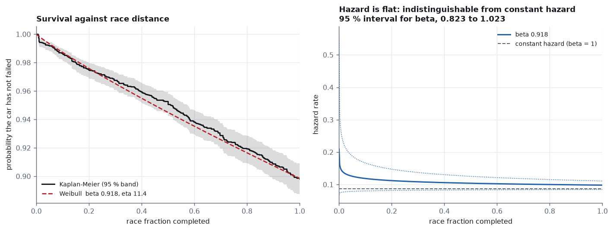
- Right-censored MLE
- Weibull / Kaplan–Meier
- Competing risks
- Probability plots
Statistical process control on 1,475 real pit stops, charted the way a
manufacturing process is charted. A textbook individuals chart with 3-sigma limits raises
14.7× as many alarms as it should, and the full eight Nelson rules raise
82× — on a process in control by construction. The same experiment on
normal data returns 1.0×.
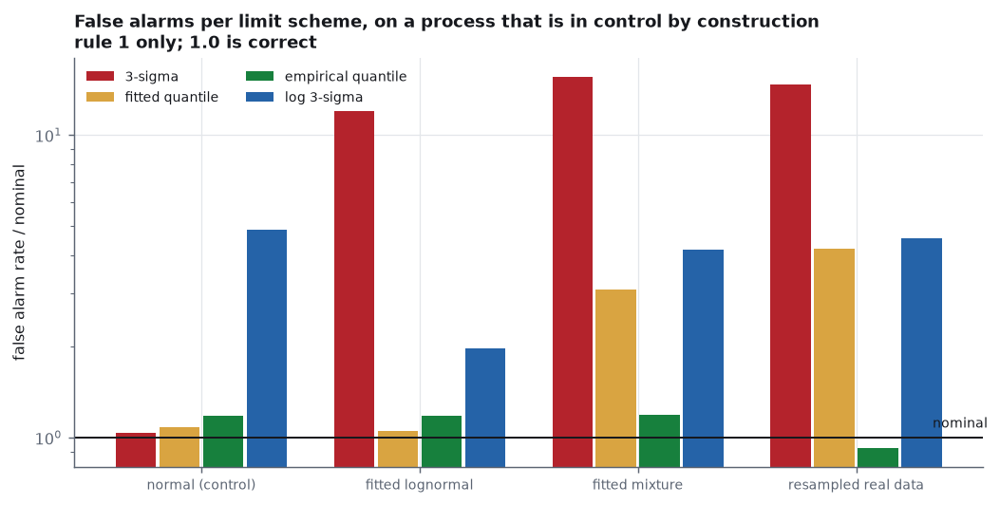
- SPC on non-normal data
- Monte Carlo false-alarm rates
- Capability indices
- Limit calibration
A quasi-steady-state lap time solver written from scratch, about sixty
lines, nothing fitted. It lands within ±3.2% of the fastest 2026 race
laps at Monza and Silverstone and misses Monaco by 11.6% — and the repo
works out which assumption is wrong instead of turning up the grip until the answer
agrees.
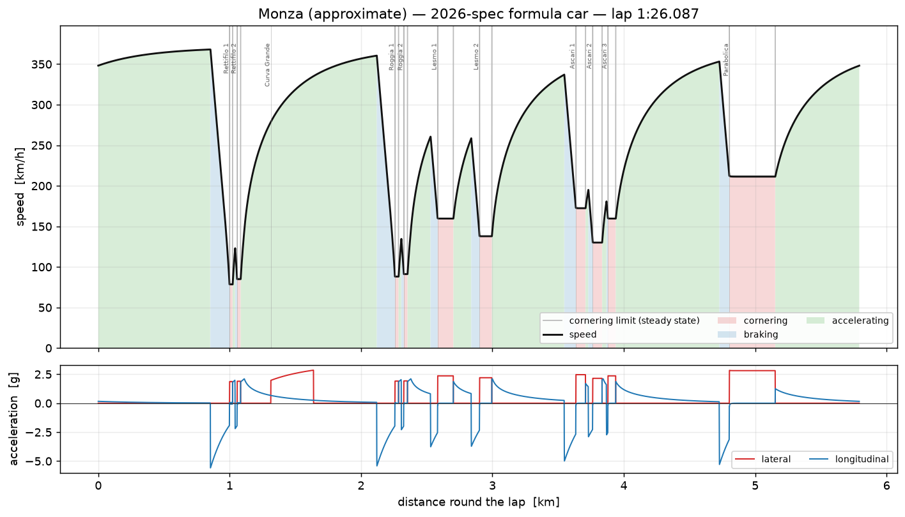
- Quasi-steady-state solver
- g–g envelope
- Root finding on speed-dependent downforce
- Validation against measured laps
Pit strategy solved by Monte Carlo from 24,386 lap times and 912 pit
stops, with every input measured from the same season the answer is tested against — pit
loss 21.75 s green flag, 7.43 s neutralised. Against
2023 the optimiser agrees at 5 circuits and calls too few stops at 9,
and most of the project is finding out why.
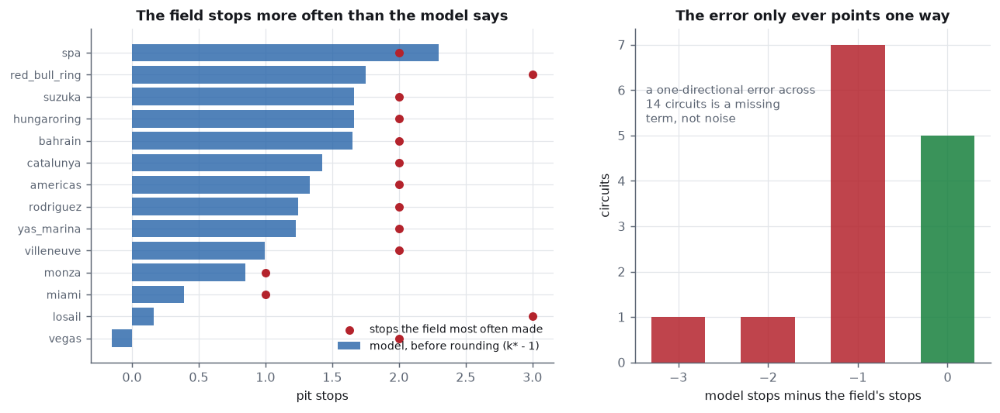
- Monte Carlo over strategies
- Inputs measured, not tabulated
- Optimiser validation against the field
Tyre degradation from 24,386 lap times, with the fuel effect estimated
out rather than assumed away. The obvious estimate has the wrong sign:
within a stint the data says tyres get 0.025 s/lap faster; put the race lap in the same
model and it says 0.032 s/lap slower (95% CI +0.026 to +0.038).
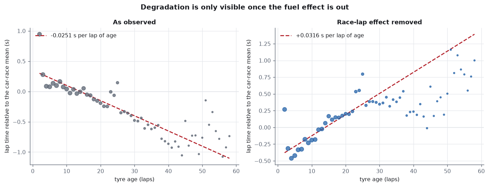
- Confounded regression
- Fixed effects
- Identification argument
- Contamination checks
How much of a lap time is the car and how much the driver, by variance
components. The car is 0.732 s a lap and the driver 0.192
— but what happened on a given afternoon is 0.461, which is 2.4× the
driver. The largest thing a single-season ranking measures, after the car, is luck.
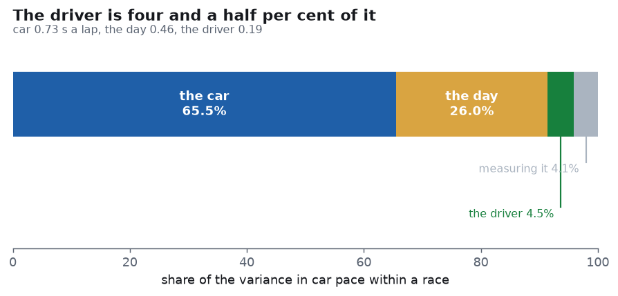
- Variance components
- Mixed effects
- Teammate pairing
- Reliability of the ranking
What a slow pit stop actually costs, measured the only way it can be
without inventing anything: two cars of the same team in the same race, one of which had
the wheel gun misfire. A botched stop costs 1.34 places at the flag,
95% interval [0.70, 1.98], p = 0.0001.
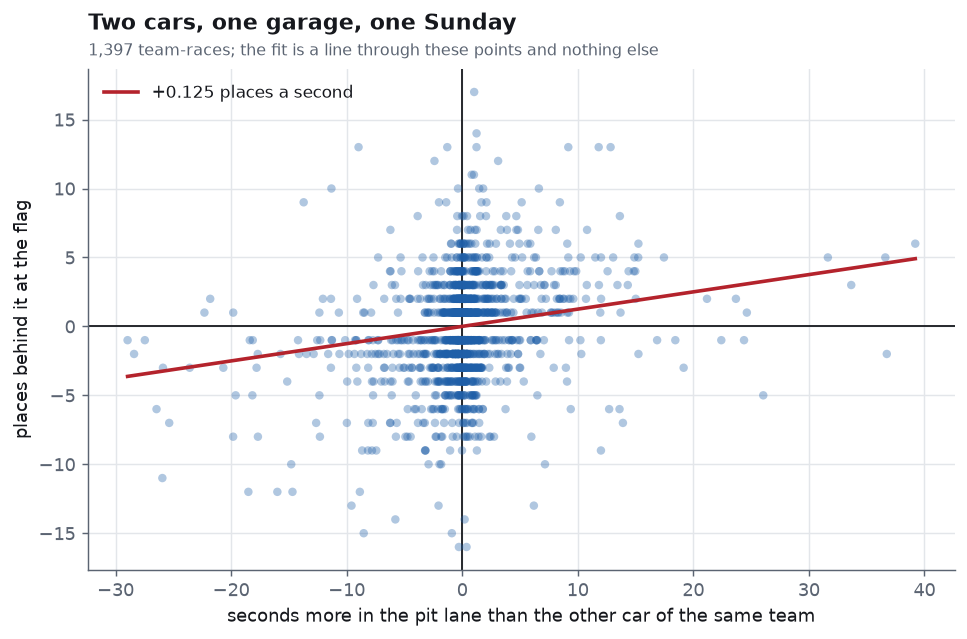
- Within-pair comparison
- Bootstrap intervals
- Dose–response
- Placebo checks
What one grid slot is worth, measured from the 596 of 2,241 entries
that took a grid penalty — the one thing that moves a car without changing the car.
0.17 places at the flag, 95% [+0.07, +0.27]. Regressing on grid position
says 0.30, so 44% of apparent track position is the car reasserting itself.
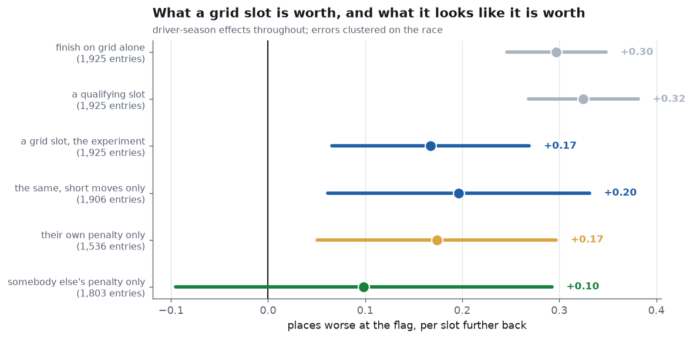
- Natural experiment
- Within-driver fixed effects
- Bootstrap intervals
- Confound audit
A green-flag pit stop costs 23.2 s; the same stop
sheltered by a safety car costs 5.2 s — a prize of 18.0 s,
95% [+5.3, +33.0], handed to 160 of the 280 cars that still had a stop to make. The hard
part is telling a neutralisation from rain, and the repo does that before anything else.
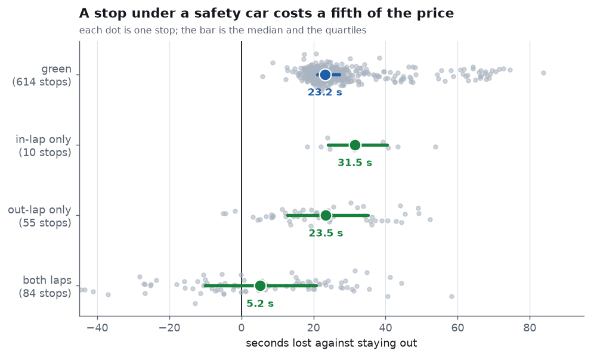
- Event detection vs rain confounder
- Counterfactual pit loss
- Validation against known events
What pitting first is worth, from lap times alone — no telemetry, no
gap feed. Against a same-lap control the gain is +2.1 to +3.8 s, best at a
three-lap head start, and fully repaid by lap 12 — it is a loan, not a gain.
11.4% of 731 attempts work, against 3.4% of the controls.
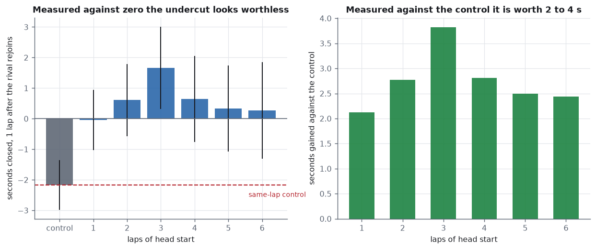
- Control construction from lap times
- Dose–response
- Decay estimation
- Census and attrition audit
How much quicker a car has to be to get past, from 24,386 lap times and
nothing else. +0.40 s a lap for an even chance; being held up costs
+0.25 s a lap; a pass takes 1.76× as long as pure pace predicts. Race order rebuilt from
lap times alone agrees with the reported position on 23,956 of 23,956 laps.
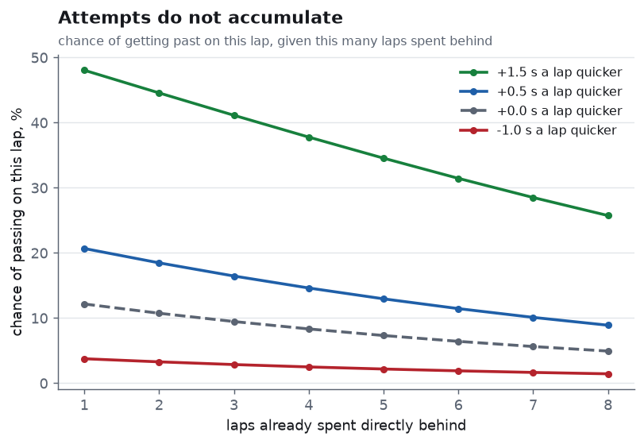
- Hazard modelling
- Dose–response
- Order reconstruction
- Falsification checks